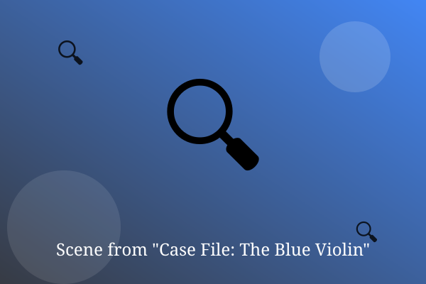

Chapter 1: The Client

The client wore gloves in July and never gave her name. She put a photo on my desk: a blue violin, very old.
'It was stolen last week,' she said. 'It also plays by itself at night, so you will want to hurry.'
I have taken stranger cases, but not many. I put on my coat and asked where she last heard it.
— End of Chapter —